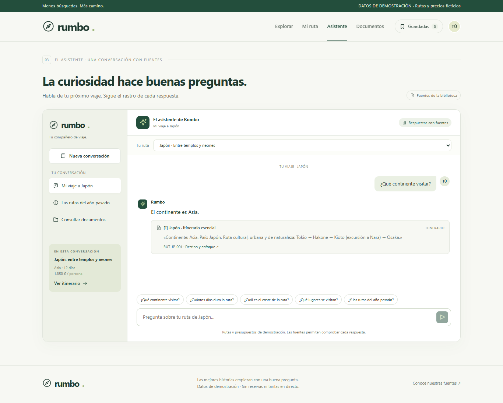
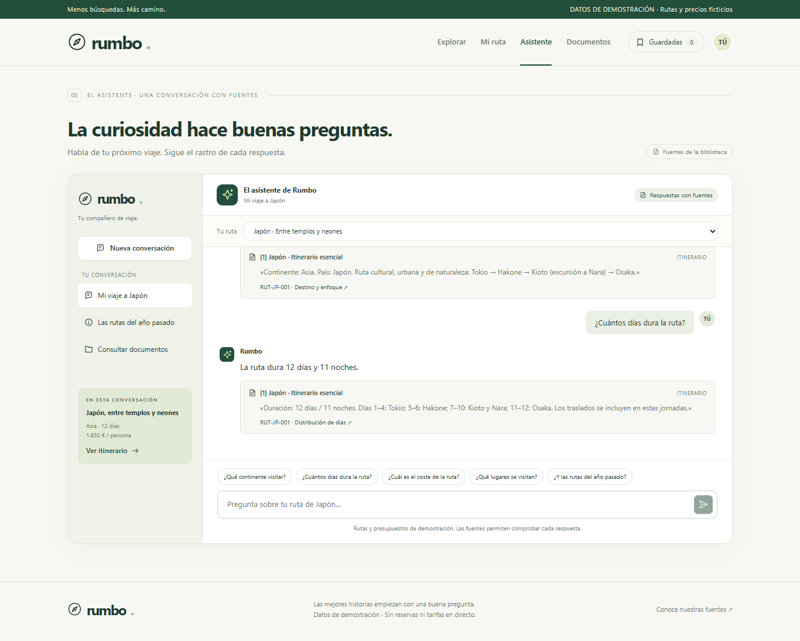
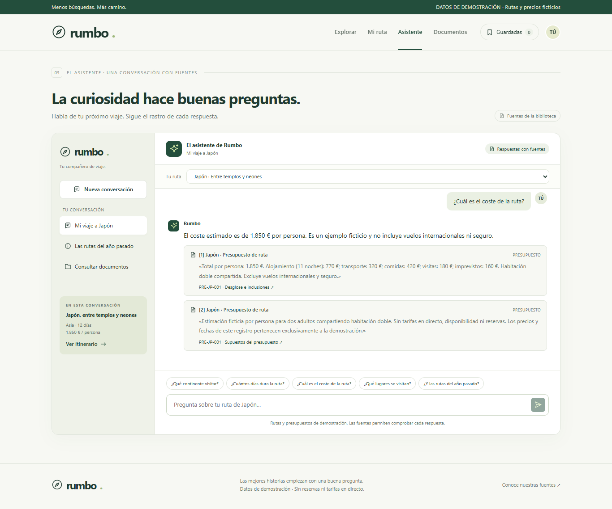
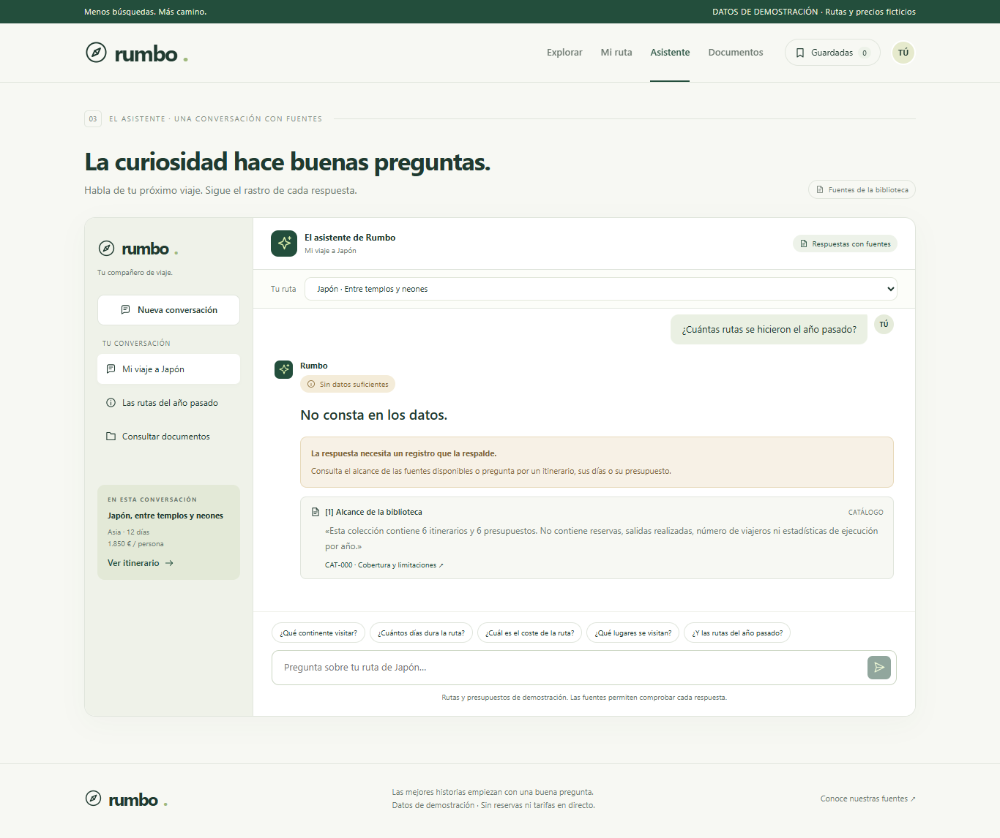
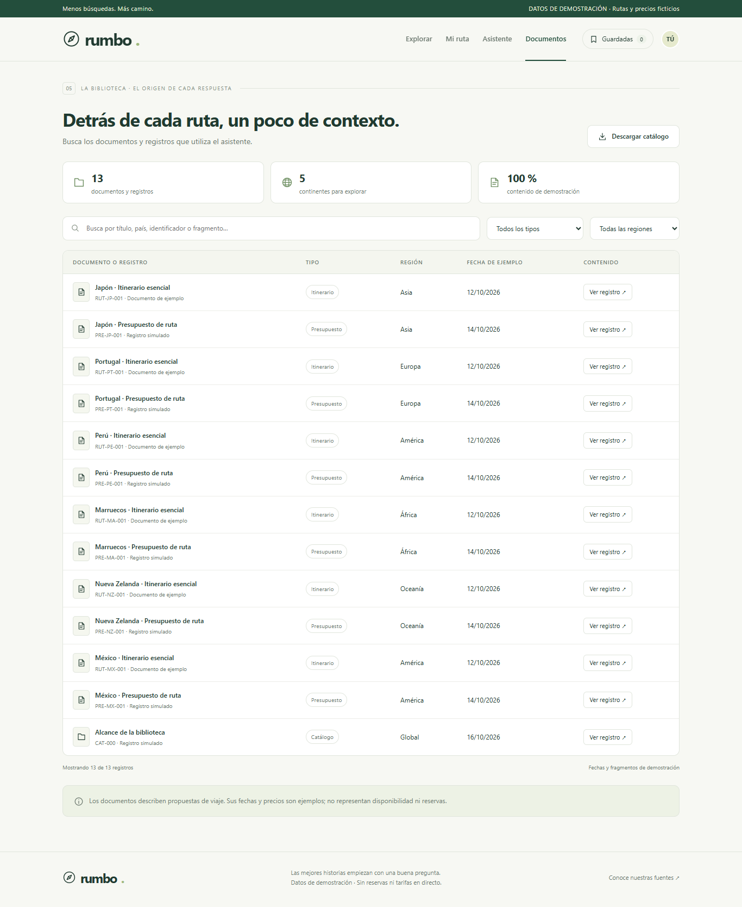

Reúne itinerarios, lugares que visitar y presupuestos para preparar viajes por el mundo. Permite preguntar en lenguaje natural y comprobar el origen de cada respuesta, mostrando «No consta» cuando los datos no la respaldan.
De dónde salen los datos
Datos inventados pero realistas de maquetas.html, extraídos mediante preparar_datos.py a datos/rutas.json y datos/documentos.json: seis rutas, seis presupuestos y un registro de alcance, con 32 fragmentos en total.
Esta versión no recopila páginas de viajes en directo. Los precios, fechas e itinerarios son de demostración y no representan tarifas actuales ni reservas reales.
Prueba: 16/10/2026, 13:19:20 · Europe/Madrid Capturas con Microsoft Edge · Ventana 1366 × 900 Interfaz local: http://127.0.0.1:5173
Buscador de Viajes por el Mundo
Chat · Continente

Figura 1. Primera pregunta: el asistente sitúa la ruta de Japón en Asia y muestra el fragmento del itinerario que lo acredita.Buscador de Viajes por el Mundo
Chat · Duración

Figura 2. Segunda pregunta, en la misma conversación: duración de 12 días y 11 noches. Las citas permiten comprobar la distribución de las etapas.Buscador de Viajes por el Mundo
Chat · Coste

Figura 3. Tercera pregunta: presupuesto estimado de 1.850 € por persona. El documento permite comprobar sus partidas y exclusiones. El área de conversación se amplía para capturar completas las fuentes, manteniendo la ventana de 1366 × 900.Buscador de Viajes por el Mundo
Chat · Cuando no consta

Figura 4. Cuarta pregunta, manteniendo el historial: no hay registros de rutas realizadas el año pasado. La respuesta muestra «No consta» y cita el alcance del catálogo, sin consultar al generador.Buscador de Viajes por el Mundo
Listado de documentos

Figura 5. Biblioteca de los 13 documentos y registros de ejemplo. Incluye búsqueda, filtros y acceso al contenido completo de cada registro.Buscador de Viajes por el Mundo
Cómo lo comprobé · Destino y duración
Prueba ejecutada el 16/10/2026, 13:19:20 (Europe/Madrid), en Edge a 1366 × 900. Preguntas enviadas desde la interfaz con historial, sin simular respuestas.
1. ¿Qué continente visitar?
Respuesta real: El continente es Asia.
Contraste: Sí: la información de la respuesta está respaldada por los fragmentos siguientes. La coincidencia literal de cada cita con el catálogo se comprobó automáticamente.
Continente: Asia. País: Japón. Ruta cultural, urbana y de naturaleza: Tokio → Hakone → Kioto (excursión a Nara) → Osaka.
2. ¿Cuántos días dura la ruta?
Respuesta real: La ruta dura 12 días y 11 noches.
Contraste: Sí: la información de la respuesta está respaldada por los fragmentos siguientes. La coincidencia literal de cada cita con el catálogo se comprobó automáticamente.
Abre: Japón · Itinerario esencial · RUT-JP-001 Sección: Distribución de días · RUT-JP-001:2
Duración: 12 días / 11 noches. Días 1–4: Tokio; 5–6: Hakone; 7–10: Kioto y Nara; 11–12: Osaka. Los traslados se incluyen en estas jornadas.
Buscador de Viajes por el Mundo
Cómo lo comprobé · Coste y límites
3. ¿Cuál es el coste de la ruta?
Respuesta real: El coste estimado es de 1.850 € por persona. Es un ejemplo ficticio y no incluye vuelos internacionales ni seguro.
Contraste: Sí: la información de la respuesta está respaldada por los fragmentos siguientes. La coincidencia literal de cada cita con el catálogo se comprobó automáticamente.
Abre: Japón · Presupuesto de ruta · PRE-JP-001 Sección: Desglose e inclusiones · PRE-JP-001:1
Total por persona: 1.850 €. Alojamiento (11 noches): 770 €; transporte: 320 €; comidas: 420 €; visitas: 180 €; imprevistos: 160 €. Habitación doble compartida. Excluye vuelos internacionales y seguro.
Abre: Japón · Presupuesto de ruta · PRE-JP-001 Sección: Supuestos del presupuesto · PRE-JP-001:2
Estimación ficticia por persona para dos adultos compartiendo habitación doble. Sin tarifas en directo, disponibilidad ni reservas. Los precios y fechas de este registro pertenecen exclusivamente a la demostración.
4. ¿Cuántas rutas se hicieron el año pasado?
Respuesta real: No consta en los datos.
Contraste: Sí: el registro declara que no existen estadísticas de viajes realizados; no permite dar una cifra. La API devolvió consta=false y modelo_consultado=false. La coincidencia literal de cada cita con el catálogo se comprobó automáticamente.
Abre: Alcance de la biblioteca · CAT-000 Sección: Cobertura y limitaciones · CAT-000:1
Esta colección contiene 6 itinerarios y 6 presupuestos. No contiene reservas, salidas realizadas, número de viajeros ni estadísticas de ejecución por año.
Para confirmarlo tú: abre Documentos, busca el identificador indicado y pulsa «Ver registro». También puedes abrir datos/documentos.json y localizar el identificador del fragmento. Las citas bajo cada respuesta abren directamente el documento correspondiente.
Buscador de Viajes por el Mundo
Cómo está hecho
Servidor Python con RAG
FastAPI se ejecuta con uv run servidor.py, en el puerto 8000. El catálogo se divide en fragmentos y se indexa mediante embeddings normalizados. La búsqueda compara la pregunta con los fragmentos usando similitud coseno con NumPy.
El índice se guarda en data/rag/indice.npz y se reutiliza al arrancar, salvo que cambien los documentos o el modelo. Los fragmentos recuperados fundamentan una respuesta estructurada; las fuentes se reconstruyen desde el catálogo.
Si no se recupera información suficiente, el servidor devuelve «No consta» sin pedir una respuesta al modelo. La pregunta de rutas realizadas se detecta antes de embeddings y generación, porque el catálogo declara expresamente esa ausencia.
Interfaz en Svelte
Svelte con TypeScript y Vite, con explorador, detalle, chat y biblioteca. Solo consume /api/rutas, /api/documentos y /api/preguntar. Vite reenvía esas rutas al servidor Python. La clave permanece en el .env del servidor y nunca se envía al navegador.
Repetir la comprobación
En la raíz: uv run servidor.py.
En otra terminal, dentro de web/: npm.cmd run dev.
En web/: node capturas.mjs repite preguntas, capturas y PDF. Requiere conexión y puede consumir la API del modelo.
node capturas.mjs --pdf-only vuelve a generar solo el PDF desde el HTML existente.
Evidencia técnica: capturas/comprobacion.json, con respuestas y citas recibidas; capturas/pdf-resumen.json, con el número de páginas. Las cinco imágenes se enlazan por rutas relativas. No se descargaron navegadores.